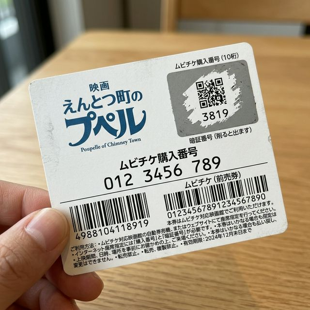

ムビチケ利用マニュアル
映画『えんとつ町のプペル ～約束の時計台～』特別版
このマニュアルでは、ムビチケを使ってスマートに映画を楽しむための全ステップを日本語で分かりやすく解説します。沖縄特有の注意点も網羅した完全版です。
1. カードの見方（現物の確認）
お手元のカード型ムビチケ（ティザーver）の裏面には、予約に必要な重要な情報が記載されています。

※図面はお手元の本物のカードレイアウトを忠実に再現した解説用サンプルです。
A
ムビチケ購入番号（10桁）
カード中央に記載されている **【486】** から始まる10桁の数字です。
B
銀色の暗証番号部分（ここを削る）
右上の銀色のスクラッチ部分をコインなどで優しく削ってください。
- 4桁の数字（暗証番号）：ネット予約の際に入力します。
- 二次元コード：削った下から現れ、劇場の機械で読み込むことができます。
2. ネットで座席を指定する
1
映画館のサイトへアクセス
スターシアターズ（シネマQ等）やユナイテッド・シネマのHPから、希望の日時を選択します。
2
ムビチケ情報を入力
券種選択または決済画面で【ムビチケを利用する】を選び、上記の2つの番号を入力してください。
3. 沖縄エリアの重要ポイント
⚠️
スターシアターズ利用時の注意
一部の自動券売機では物理カードをうまくスキャンできないことがあります。その場合は【番号手入力】メニューを選べば確実に発券できます。
📍
桜坂劇場のルール
一部の特別上映会ではムビチケが対象外となる場合があります。不安な時は事前に劇場サイトの「ムビチケ利用可」の文字を確認しましょう。
4. よくある質問
Q. 暗証番号が削りすぎで読めなくなった。
ムビチケのサポートセンターへのお問い合わせが必要になります。スクラッチはコインなどで優しく削りましょう。
Q. 事前に予約しないとどうなる？
当日に空きがあれば劇場の機械で発券できますが、混雑時は満席の可能性があるため、前日までのネット予約をおすすめします。